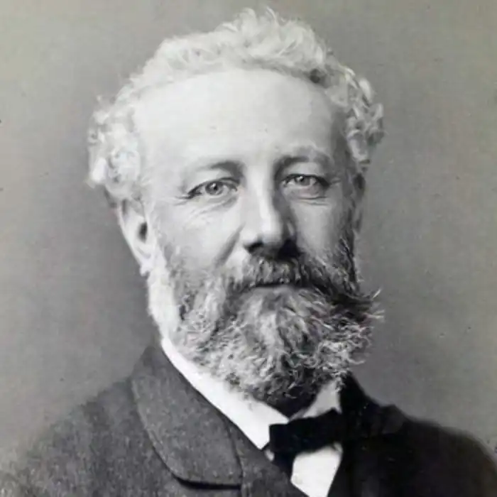
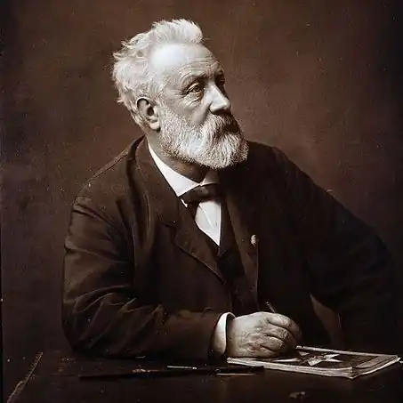
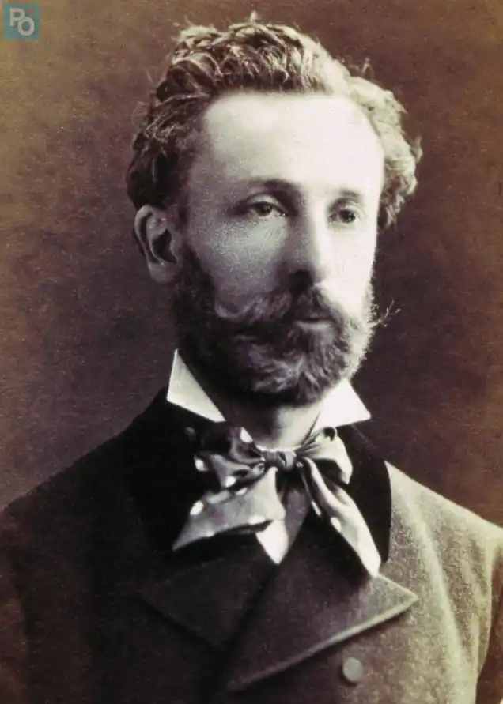

ЖУЛЬ ВЕРН
(1828-1905)
Жуль Верн — французький письменник-фантаст був і залишився вірним супутником юності. Перші ж романи принесли йому всенародне визнання. Щойно книги французького письменника виходили друком, вони негайно перекладалися багатьма мовами й поширювалися в усьому світі. Жуль Верн був у розквіті творчих сил, він ще не встиг здійснити й половини задуманого, коли захоплені сучасники стали називати його "всесвітнім мандрівником", "віщуном", "чарівником", "пророком", "провидцем", "винахідником без майстерні" (заголовки статей, що з'являлися за його життя). А він просто задумав описати всю земну кулю — природу різних кліматичних зон, тваринний і рослинний світ, традиції і звичаї всіх народів планети. І не просто описати, як це роблять географи, а втілити цей задум у багатотомній серії романів, що її він назвав "Незвичайні подорожі". Працьовитість Жуля Берна вражає масштабністю. Серія включає шістдесят три романи та два збірники повістей і оповідань, виданих у 97 книгах. У повному обсязі — близько тисячі друкованих аркушів або вісімнадцять тисяч книжкових сторінок! Жуль Верн працював над "Незвичайними подорожами" понад сорок років (з 1862 до початку 1905 року), видання ж усієї серії розтяглося більше ніж на піввіку. За цей час змінилися покоління школярів, для яких він писав свої книги. Пізні романи Жуля Берна потрапляли в нетерплячі руки синів і онуків його перших читачів. "Незвичайні подорожі" у сукупності — це універсальний географічний нарис земної кулі. Якщо розподілити романи за місцем дії, то виявиться, що в чотирьох романах описуються кругосвітні подорожі, у п'ятнадцятьох — країни Європи, у восьми — Північна Америка, у восьми — Африка, у п'ятьох — Азія, у чотирьох — Південна Америка, у чотирьох — Арктика, у трьох — Австралія й Океанія й в одному — Антарктида. Крім того, у сімох романах місцем дії слугують моря й океани. Чотири романи складають цикл "робінзонад" — дія розгортається на незаселених островах. І нарешті, у трьох романах події відбуваються у міжпланетному просторі. До того ж у багатьох творах — не тільки "кругосвітнього" циклу — герої мандрують із країни в країну. Можна сказати без перебільшення, що сторінки книг Жуля Берна переповнюють морські хвилі, пісок пустель, вулканічний попіл, арктичні вихори, космічний пил. Місце дії в його романах — планета Земля, і не тільки Земля, але й Всесвіт. Географія і природознавство сусідують у "Незвичайних подорожах" з технічними й точними науками. Герої Жуля Берна завжди подорожують. Долаючи величезні відстані, вони прагнуть виграти час. Досягнення небувалої швидкості вимагає новітніх засобів пересування. Жуль Берн "удосконалив" всі види транспорту від сухопутних до уявлюваних міжпланетних. Його герої створюють швидкохідні машини, підводні й повітряні кораблі, досліджують вулкани та глибини морів, проникають у недоступні нетрі, відкривають нові землі, стираючи з географічних карт останні "білі плями". Увесь світ слугує їм майстернею для експериментів. На дні океану, на незаселеному острові, на Північному полюсі, у міжпланетному просторі,— де б вони не були, скрізь їхня лабораторія, вони працюють, діють, сперечаються, впроваджують у дійсність свої зухвалі мрії. В особі Ж. Верна поєднувалися мовби кілька постатей. Він був справжнім засновником наукової фантастики, що ґрунтувалася на науковій вірогідності й нерідко на науковому передбаченні, був чудовим майстром пригодницького роману, жагучим пропагандистом науки та її майбутніх здобутків. Спираючись на пошуки наукової думки, він зображував бажане як уже здійснене. Винаходи, що ще не набули застосування, моделі механізмів, що проходили випробування, машини, що лише намічалися в ескізах, він представляв у закінченому, ідеальному вигляді. Звідси — неймовірні збіги мрій письменника з втіленням подібних ідей у життя. Але він не був ні "віщуном", ні "пророком". Його герої вирішували задачі, підказані самим життям — бурхливим розвитком промисловості, транспорту, зв'язку. Науково-технічні фантазії романіста майже ніколи не перевершували можливостей їхнього здійснення на більш високому ступені наукового й технічного прогресу. Саме в цих напрямках працює допитлива думка героїв "Незвичайних подорожей". Винахідники, інженери, будівельники, вони споруджують прекрасні міста, зрошують пустелі, знаходять способи прискорювати ріст рослин за допомогою апаратів штучного клімату, конструюють електричні прилади, що дозволяють бачити і чути на значних відстанях, мріють про практичне використання внутрішнього тепла Землі, енергії сонця, вітру й морського прибою, про можливості нагромадження запасів енергії в могутніх акумуляторах. Вони вишукують способи продовження життя і заміни спрацьованих органів тіла новими, винаходять кольорову фотографію, звукове кіно, автоматичну лічильну машину, синтетичні харчові продукти, одяг зі скляного волокна й чимало інших чудових речей, що полегшують життя і працю людини та допомагають їй перетворювати світ. Коли Жуль Верн писав свої книги, Арктика ще не була завойована, полюси ще не були відкриті, Центральна Африка, Внутрішня Австралія, басейн Амазонки, Памір, Тибет, Антарктида майже ще не були вивчені. Герої Жуля Берна здійснюють географічні відкриття, випереджаючи справжні. Перетворення світу — головне в його творчості. Всесильний розум опановує природу. Усі чотири стихії: земля, вода, повітря, вогонь — неминуче скоряться людям. Об'єднаними зусиллями людство перетворить і поліпшить планету: Саме звідси започатковується життєствердний пафос найкращих творів Жуля Берна. Він створив роман нового типу — роман про науку та її безмежні можливості. Фантазія в нього подружилася з наукою і стала її нерозлучною супутницею. Фантазія, окрилена науковими пошуками, перетворилася на наукову фантастику. Разом з новим романом у літературу ввійшов і новий герой — лицар науки, безкорисливий учений, готовий в ім'я своїх творчих ідей, заради здійснення великих надій здійснити подвиг, піти на будь-яку жертву. У майбутнє спрямовані не тільки науково-технічні фантазії Жуля Верна, але й його герої — першовідкривачі нових земель і творці дивовижних машин. Час диктує письменникові свої вимоги. Жуль Верн вловив ці вимоги й відгукнувся на них "Незвичайними подорожами". Знайти свою мету виявилося важче, ніж покласти життя на її досягнення. Старший син адвоката, Жуль Верн, знав ще замолоду, що давня сімейна традиція вимагає стати правознавцем і згодом успадкувати контору батька. Але бажання юнака розходилися із сімейними сподіваннями. Він виріс у приморському місті Нанті, марив морем і кораблями і навіть спробував — йому було тоді одинадцять років — утекти до Індії, найнявшись юнгою на шхуну "Корали". Однак невблаганний батько посилає його після ліцею до паризької Школи права. Море залишається світлою мрією, а любов до поезії, театру та музики розтрощує твердиня батьківської влади. На догоду батькові, вистраждавши абияк диплом правознавця, він не йде служити в адвокатську контору в Нанті, а обирає напівголодне існування літератора, який перебивається мізерними заробітками — пише комедії, водевілі, драми, складає лібрето комічних опер і після кожної чергової невдачі працює з іще більшим азартом. У той же час жадібна допитливість, захоплення природничими науками змушують його відвідувати Національну бібліотеку, лекції і вчені диспути, робити виписки з прочитаних книг, не знаючи ще, на що придасться йому ця купа всіляких довідок з географії, астрономії, навігації, історії техніки й наукових відкриттів. Якось — це було всередині 1850-х років — у відповідь на умовляння батька відмовитися від нікчемних занять і повернутися до Нанту юнак рішуче заявив, що він не сумнівається у своєму майбутньому й до тридцяти п'яти років посяде в літературі міцне місце. Йому виповнилося 27 років. 3. безлічі передбачень Жуля Берна, що збулися з більшим чи меншим наближенням, цей перший прогноз виявився бездоганно точним. Але пошуки ще тривали. Кілька надрукованих оповідань з морської тематики, яким сам він не надавав великого значення, хоча пізніше й включив їх до своєї величезної серії, були віхами на шляху до "Незвичайних подорожей". Лише на зламі шістдесятих років, переконавшись, що тепер він цілком підготовлений, Жуль Верн став розробляти нові терени. Це було усвідомлене художнє відкриття. Він відкрив для літератури поезію науки. Пориваючи з усім, що його колись гальмувало, він сповістив друзям, що знайшов свою золоту жилу. Восени 1862 року Жуль Верн закінчив свій перший роман. Його давній покровитель Александр Дюма порекомендував звернутися до Етцеля, розумного, досвідченого видавця, який підшукував здібних співробітників для юнацького "Журналу виховання і розваги". З перших же сторінок рукопису Етцель вгадав, що випадок привів до нього саме того письменника, якого бракувало дитячій літературі. Етцель швидко прочитав роман, висловив свої зауваги й віддав Жюлю Верну на допрацювання. Уже через два тижні рукопис повернувся у виправленому вигляді, і на початку 1863 року роман вийшов у світ. Сама назва — "П'ять тижнів на повітряній кулі" — не могла пройти непоміченою. Успіх перевершив усі сподівання й ознаменував народження "роману про науку", у якому захопливі пригоди поєднуються з популяризацією знань і обґрунтуванням різних гіпотез. Так, уже в цьому першому романі про уявлювані географічні відкриття в Африці, зроблені з пташиного польоту, Жуль Верн "сконструював" аеростат з температурним керуванням і безпомилково напророкував місцезнаходження тоді ще не відкритих джерел Нілу. Романіст уклав з видавцем довгостроковий договір, погодившись писати по три книги на рік. Тепер він міг без перешкод, не думаючи про завтрашній день, узятись до здійснення численних задумів. Етцель стає його другом і порадником. У Парижі вони часто бачаться, а коли Жуль Верн їде працювати до моря або курсує уздовж берегів Франції, замкнувшись у "плавучому кабінеті" на борту своєї яхти "Сен-Мішель", вони регулярно обмінюються листами. Із запізненням знайшовши своє життєве поприще, письменник видає книгу за книгою, і що не роман, то шедевр. Фантазію повітряну змінює геологічна — "Подорож до центру Землі" (1864).